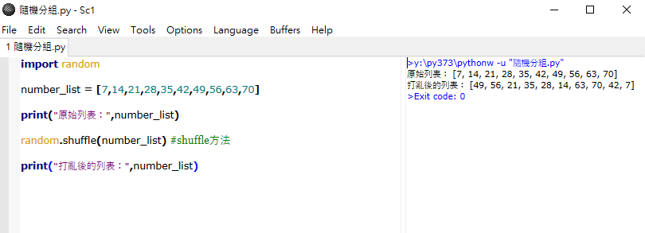
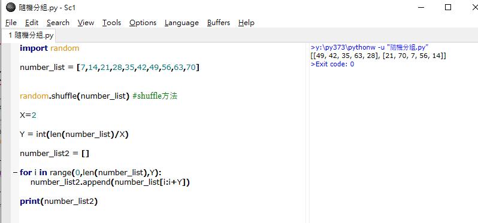

About <<
Previous Next >> W6-W9
W1-W5
w1. 建立個人倉儲cd2020及進行每週網站管理
w2. 重新創建python3.8.2隨身系統
- pyhton網站https://www.python.org/，下載3.8.2版本
- 完成後開啟，點選Customize installation(定制)
- 把pip選項取消，接著案next到py382
- 下載SciTE系統full 64-bit download，下載完成後解壓縮至data下的wscite432
- 下載PortableGit 64-bit Git for Windows Portable 至portablegit下。
- 用編輯器開啟start_mdecourse.bat檔案
- 在y槽執行python git-pip.py
- 安裝軟件包
w3.
- 隨機分組
(1)random.shuffle的語法
random.shuffle（x，随機）使用方法


2.抽點名
import random
number_list = [7,14,21,28,35,42,49,56,63,70] #學生名單
X = 3 #抽點人數
print(random.sample(number_list,X)) #顯示抽點結果
w4
第三組第一次直播會議
w5 清明節放假
About <<
Previous Next >> W6-W9